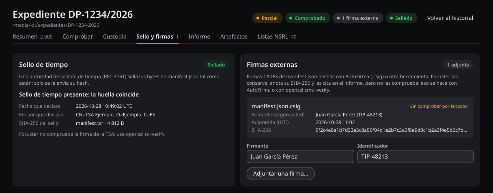
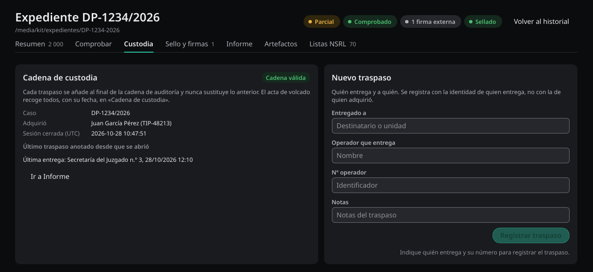

Clave de firma
Foruster no genera ni guarda claves: la clave es del laboratorio y se crea una sola vez.
# Privada. Custódiala: quien la tenga puede firmar.
openssl genpkey -algorithm ed25519 -out laboratorio.key
chmod 600 laboratorio.key
# Pública, para quien deba verificar.
openssl pkey -in laboratorio.key -pubout -out laboratorio.pubFirmar un expediente ya cerrado:
foruster-cli sign /casos/EXP-1-2026 --key laboratorio.key \
--signer "Nombre Apellidos" --signer-id "ID-0001"
Un expediente ya firmado no se vuelve a firmar salvo que añadas
--force. La sustitución queda como asiento de custodia, con
los hashes de lo que se sustituyó.
La clave pública se reparte por fuera del expediente: por diligencia, en el pie del informe o desde el registro del laboratorio.
Una clave pública que venga dentro del expediente no sirve de raíz de confianza. Quien pueda alterar el expediente puede cambiarla y volver a firmar. Tienes que aportar por tu cuenta la clave en la que confías; sin ella, Foruster declara que la firma está presente pero sin comprobar, nunca que sea válida.
La firma Ed25519 es una firma avanzada, no cualificada en el sentido de eIDAS.
Sello de tiempo
Un sello de tiempo RFC 3161 acredita que el manifiesto existía en el momento que indica la autoridad de sellado. Foruster solo le envía el hash del manifiesto, nunca su contenido. Un sello no se sustituye nunca.
Hace falta una autoridad de sellado con dirección http://
para pedir el sello directamente:
foruster-cli timestamp /casos/EXP-1-2026 --tsa http://tsa.ejemplo.es
Con una autoridad https://, obtén la respuesta aparte, con
openssl ts y curl, y cárgala en el expediente:
openssl ts -query -data /casos/EXP-1-2026/manifest.json -sha256 -cert -out manifest.tsq
curl -H "Content-Type: application/timestamp-query" \
--data-binary @manifest.tsq https://tsa.ejemplo.es -o manifest.tsr
foruster-cli timestamp /casos/EXP-1-2026 --import manifest.tsr
Foruster no comprueba la firma de la autoridad de sellado.
Comprueba que el sello corresponde a este manifiesto. La firma de la
autoridad y su cadena de certificados se comprueban con
openssl ts -verify. Hasta entonces, ni la fecha ni el
emisor quedan acreditados.
openssl ts -verify -data manifest.json -in manifest.tsr \
-CAfile certificado-ac-tsa.pemEl sello solo es cualificado si la autoridad de sellado es un prestador cualificado. Acredita que el manifiesto existía en esa fecha, no el momento en que se hizo la adquisición. Sin sello, las fechas del expediente proceden del reloj del equipo, y el informe lo dice.
Firma externa
Si tu organización firma con otra herramienta, como la firma CAdES de
AutoFirma sobre manifest.json, puedes adjuntar esa firma al
expediente:
foruster-cli attach-signature /casos/EXP-1-2026 --file firma.csig \
--signer "Nombre Apellidos" --signer-id "ID-0001"
Foruster copia el fichero, anota su hash SHA-256 y un asiento de custodia,
y lo cita en el informe. Foruster guarda esa firma, pero no la
comprueba. Se comprueba con la herramienta que la creó, o con
openssl cms -verify.

Verificación
Foruster revisa el manifiesto, la cadena de auditoría y el hash de
cada elemento; con --public-key, también la firma. Sale
con código distinto de cero si algo no concuerda. Añade
--json y obtendrás un campo pass, para no
tener que leer la prosa desde un script.
foruster-cli verify /casos/EXP-1-2026 --public-key laboratorio.pub
foruster-cli verify /casos/EXP-1-2026 --public-key laboratorio.pub --json
Con --json, el campo pass vale
true o false y resume el resultado. El código de
salida sigue siendo distinto de cero si falla.
Borrar la firma no sirve para pasar la comprobación: con
--public-key, un expediente sin firma falla, y también falla
uno cuya auditoría anota una firma que ya no está.
Por un tercero
La firma se calcula sobre los bytes del manifiesto tal y como están guardados. Por eso se comprueba sin ejecutar Foruster:
openssl pkeyutl -verify -pubin -inkey laboratorio.pub \
-rawin -in manifest.json -sigfile manifest.sig
Una imagen E01 se comprueba con ewfverify; lo explica
Imagen de volúmenes y discos.
Custodia
Cada traspaso se añade al final de la misma cadena. Si vuelves a comprobar el expediente, verás que ese añadido no la rompió.
foruster-cli custody /casos/EXP-1-2026 --to "Secretaría" \
--operator "Nombre Apellidos" --operator-id "ID-0001"
La firma y el sello cubren la auditoría hasta el cierre del manifiesto. Los asientos posteriores, como los traspasos, las firmas y los sellos, quedan encadenados: si se altera uno anterior, la comprobación lo detecta. Si se añaden o se quitan asientos al final, no lo detecta. El informe lo declara.
Foruster respalda la cadena de custodia; no la sustituye. El hash y el registro de auditoría muestran si el expediente cambió. La custodia física del soporte y su documentación siguen siendo del procedimiento de tu organización.